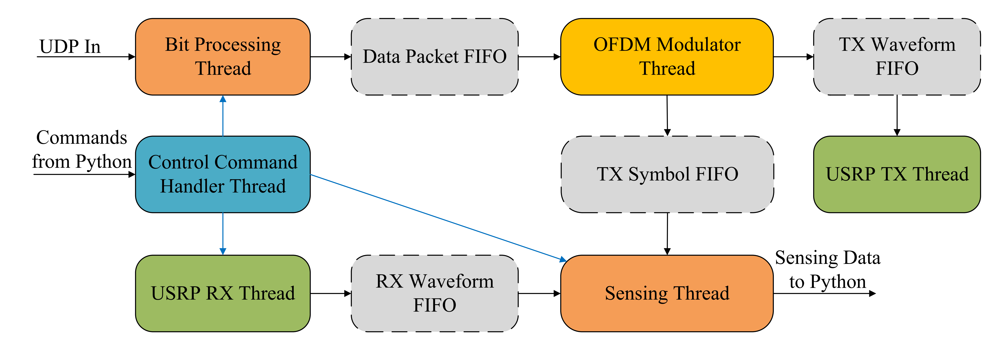

System Architecture
The OpenISAC testbed comprises a Base Station (BS) and a User Equipment (UE), each built around a Universal Software Radio Peripheral (USRP) synchronized by an oven-controlled crystal oscillator (OCXO).

BS Node: A host PC connects to the USRP over USB/Ethernet, generates the ISAC baseband waveform, and streams this to the USRP. The USRP transmits the signal and captures the radar echoes on a separate receive antenna.
UE Node: A host PC interfaces with the USRP to acquire the downlink signal. It uses an OCXO for synchronization, optionally disciplined via a DAC to minimize carrier/sampling offsets for bistatic sensing.
Software Architecture of BS
The BS software is a multi-threaded pipeline that decouples I/O and computation using ring-buffer FIFOs.

- Bit Processing: Handles UDP payloads, LDPC encoding, and scrambling.
- OFDM Modulator: Performs QPSK mapping, pilot insertion, IFFT, and CP insertion. Pads frames with random bits if traffic is low.
- Radio I/O: "USRP-TX" sends waveforms; "USRP-RX" captures radar streams.
- Sensing Thread: Performs real-time monostatic sensing (OFDM demod, division, Range-Doppler map). Supports "stride" processing to balance load.
Software Architecture of UE
The UE is also a multi-threaded pipeline designed for robust synchronization and reception.

- USRP RX: Acquires downlink baseband stream and performs timing adjustments.
- OFDM Demodulator: Operates in two states:
- SYNC_SEARCH: Scans for ZC sync symbols to estimate frame boundary and CFO.
- NORMAL: Performs FFT, channel estimation, equalization, and LLR computation. Re-enters search if lock is lost.
- Sensing Thread: Performs real-time bistatic sensing using {RX, TX} symbol pairs.
- Bit Processing: Descrambles and LDPC decodes to recover the UDP payload.